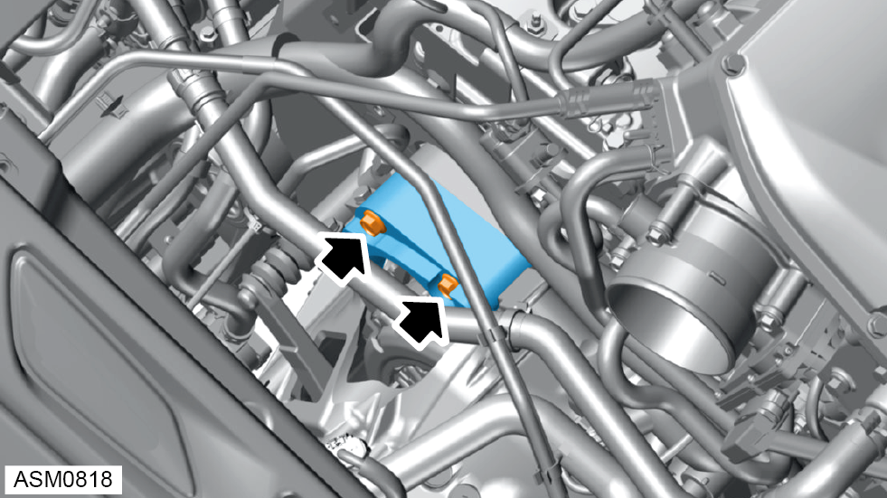
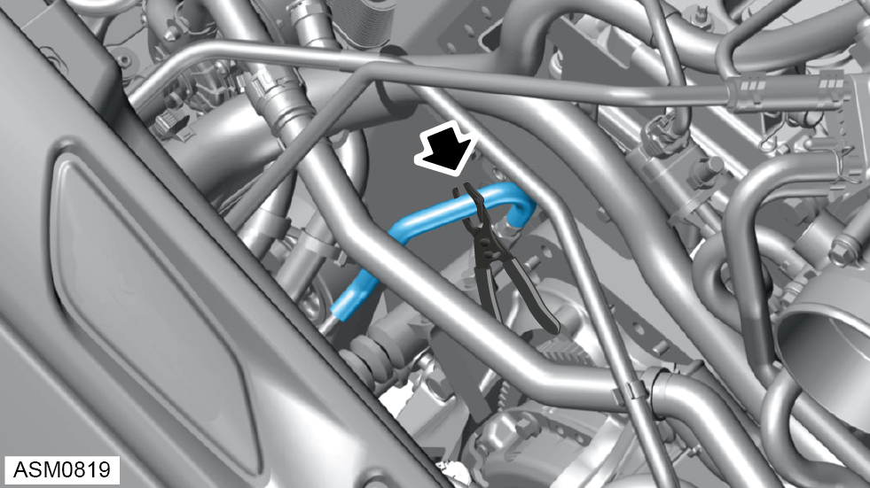
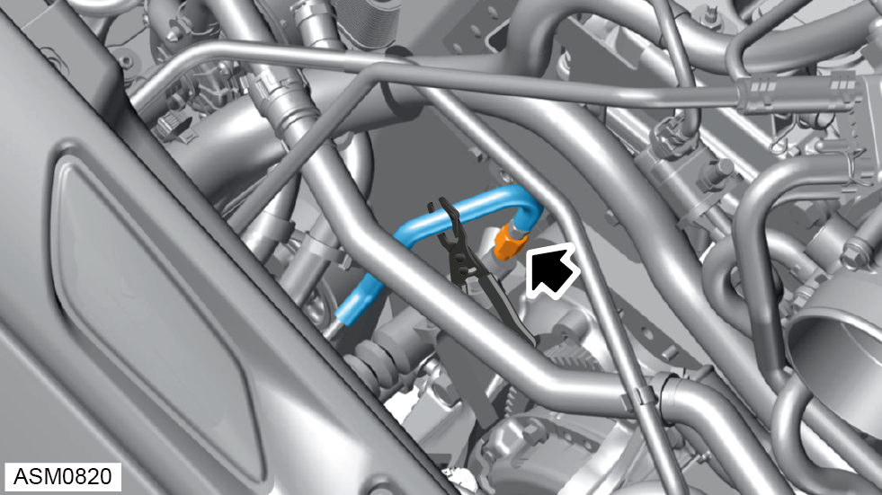
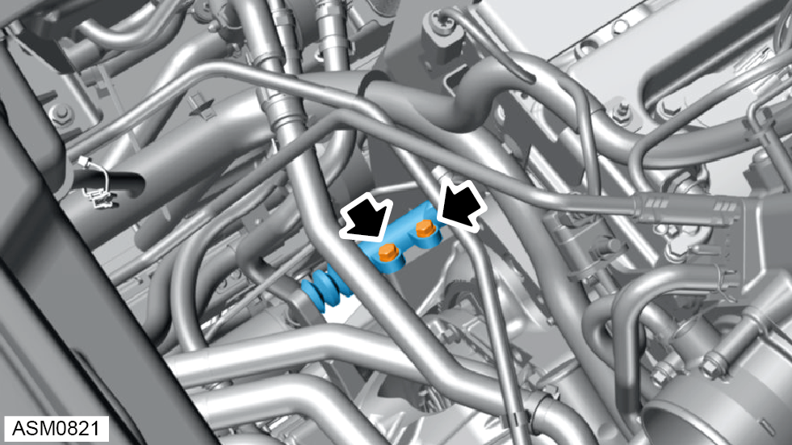

Slave Cylinder - V6
Print
Operation Code: 47.01.05-02
Removal
- Remove starter motor. Refer to procedure.

- Remove bolts (x2) securing starter motor adapter to engine.
- Remove starter motor adapter.

- Use hose clamp on clutch hose to limit fluid loss.

- Remove clutch hose from slave cylinder.

- Remove bolts (x2) securing clutch slave cylinder. Torque 12 Nm.
- Remove clutch slave cylinder.
Installation
- Installation is the reverse of removal procedure except for the following:
- Bleed clutch.
- Check and top up brake fluid level.